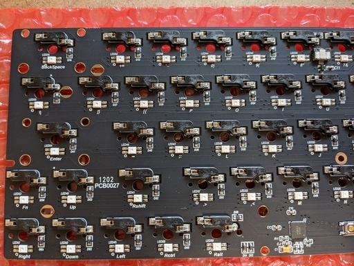
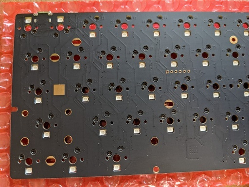
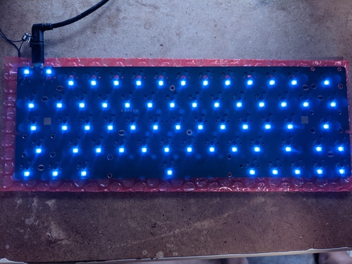
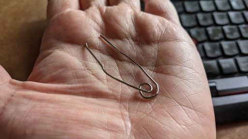
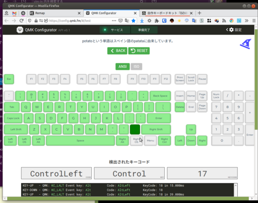
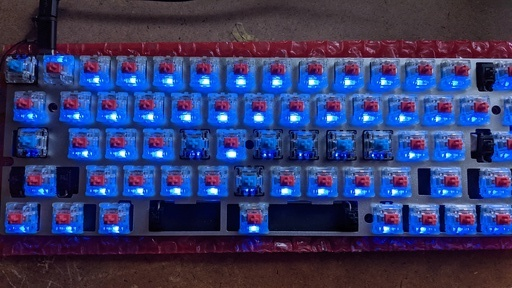
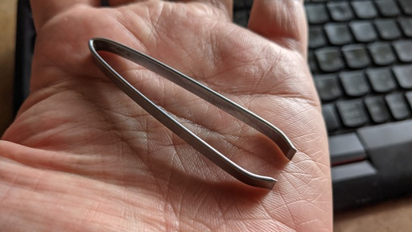
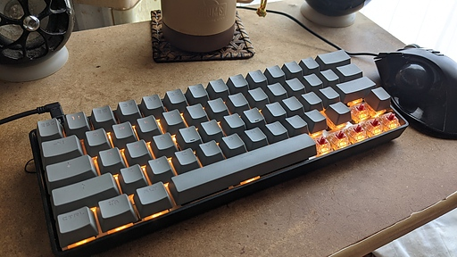
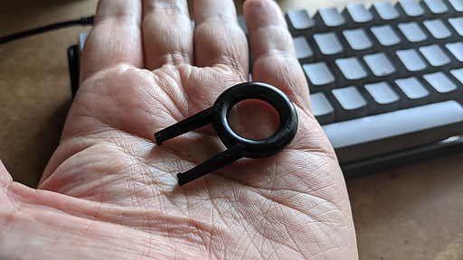
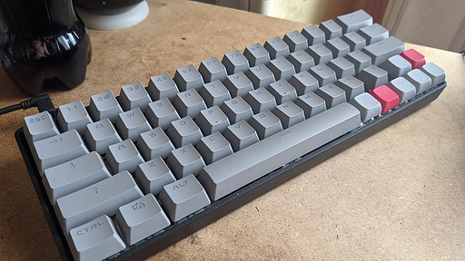

自分は定期的に HHKB 欲しい欲、もしくはメカニカル・キーボード欲しい欲が高まるのだけれど、このたびはさらにキーボード自作欲まで非常に高ぶってしまった。ならばカスタム・メカニカル・キーボードを組んでしまえば一石二鳥ではないかと思いついてしまったので思わず vim-jp の #hobby-hardware で相談してしまった。するとあっという間にいろんな人に取り囲まれてしまい、あっという間に沼に……いや、温泉にふくらはぎまで引っ張り込まれてしまった。
いろんな人にいろんな自作用キットや PCB を勧められたのだけど、パーツを組み立てるだけの簡単仕様ということと工具がほぼ不要ということで最終的に DZ60 RGB V2 をピックアップ。
実際に DZ60 RGB V2 を注文する前に自作キーボード界隈では有名なサリチル酸氏のビルドログを読んだり、 vim-jp の #hobby-hardware で香り屋さんを質問攻めにしたりして予備知識やアセンブル時の注意点を把握することに。
そして遊舎工房さんでポチってから数日後に DZ60 RGB V2 とその他必要なパーツが我が手元に集まった ( 便宜上一度にすべて集まったものとしておく )。なおスイッチは cherry MX の赤軸を 70 個、香り屋さんに譲っていただけたのが非常にありがたい。
香り屋さんは廃棄予定だからとおっしゃっていたが実際にはストックしていたものだと思う。cherry MX 赤軸 70 個は普通に購入すれば 7000 円を超える。なんらお礼ができないのは心苦しいが、なにせ月あたり 4 万円の障害者年金しか収入がないので、ありがたくご厚意を受けることにした。なので今後香り屋さんには足を向けて眠れない。
PCB が届いたらまずは検品である。PCB のすべてをチェックすることはできないが、実際にスイッチ等の取り付けをするまえに可能なことはやっておきたい。もちろん不良を見つければ店に交換をお願いすることになる。スイッチ等を取り付けたあとでは当然だが交換には応じてもらえないし、チェックを怠ってトラブルが発生した場合はこちらの瑕疵になる。
まずは目視で PCB に異常がないか確認する。PCB の両面とも確認する。もちろんハンダ不良や半導体不良まではチェックできないが、PCB が物理的に破損していないか確認することが重要なのは言うまでもない。


次に USB Type-C ケーブルでパソコンに接続し、通電させて LED がすべて点灯するか確認する。 1 つでも光らないものがあれば返品交換をお願いすることになる。

次に PCB がキー入力に反応するかどうかをチェックするのだけれど先に述べたようにスイッチを取り付けてからだと不良だったのかそうでないのかがわからず、もしもの場合に返品・交換に応じてもらえない。そのため PCB のスイッチ端子をショートさせて対応するキーとして反応するかチェックする。前述のサリチル酸氏のビルドログでは専用の工具を利用しているようだが、自分はお金がないのと自分がこれからもキーボードのアセンブルを趣味として続けるか不明なので、クリップを写真のように加工してチェックすることとした。もちろん自分の年齢からこの先趣味を増やすのも問題がありそうという判断もある。

ショートさせたスイッチ端子に対応するキー入力が発生しているかのチェックにはサリチル酸氏とは異なり VIA ではなく Web ブラウザ上で利用できる QMK Configuretor のテストモードを利用した。ただし DZ60 RGB V2 のデフォルトのキーマッピングの確認や変更は初心者にとって VIA の方が容易であると思えたので VIA を使っている。
有効になっているキーはサリチル酸氏のビルドログに書かれたものより若干多く、下図の緑色のものが有効になっていた。サリチル酸氏の説明より有効なキーが数個多い。この差がハードウェアによるものなのかデフォルトで書き込まれているファームウェアによるものなのかは不明だが私が確認した時点では下図の緑のキーが有効になっていた。

次にスイッチの脚を折ってしまったり曲げてしまわないように気をつけながら、脚がきちんとソケットに入るように、スイッチを丁寧に PCB に挿していく。スイッチはもちろんパネルの上から挿していく。
自分では丁寧にスイッチを挿し込んだつもりでも、数が多いと疲労その他の理由でミスを犯してしまい脚を折ったりしてスイッチをダメにしてしまうことがある。私は赤軸のスイッチを 3 つダメにしてしまった。購入すると 300 円強になるはずだ。もったいない。
なお赤軸は先に述べたように香り屋さんが譲ってくれたもので、青軸はなけなしのお金をはたいて私が 10 個だけ買えたものだ。

スイッチをすべて取り付け終わったら、ここで再びスイッチに対応するキーがすべて反応するかチェックする。ここでのチェックの目的はスイッチの差し込み不良やスイッチ自体の不良を弾いてしまうことにある。
こういった製品をアセンブルするときのポイントは可能な限り正常に動作する状態を維持しながらアセンブルを進めていくことだ。そうすることでもしもトラブルになったときの原因を切り分ける際に比較的容易に原因にたどり着くことができる。
不良スイッチがあったり、スイッチのセットをミスってしまって脚を折ってしまったような場合はそのスイッチを取り外す必要がある。そのためにスイッチプラーというものが販売されているのだけれど、私の場合はやはり継続的にキーボードを組むかどうかもわからず現時点でお金の余裕がないことから家にあった棘抜きを流用していた。

スイッチの取り付けが終わり、動作確認も終わったらお気に入りのキーキャップを購入し取り付けていけば良い。

キーキャップを取り外す必要がでてきたらキーキャッププラーで取り外すとよい。
私はキーキャップセットに付属するキーキャッププラーを使ったが、そういったものがない人は安いものが Amazon でも売っているので買っておくのがよい。時間がかかってもよいなら ebay や AliExpress で購入するという方法もあり Amazon なんかよりはるかに安く購入できる。ただしどちらもほとんどが中国発送なので到着まで 2、3 週間はかかると考えておいたほうがよい。
キーキャッププラーだが、これはさすがにキーキャップ間の隙間が狭くて差し込めないため棘抜きの流用は現実的ではない。

そしてキーキャップをすべて取り付ければめでたく完成である。

先にちょっと触れたように DZ60 RGB V2 はすでにファームウェアが書き込まれていて、なんら変更を加えなくても使用することができる。しかし自分が使いやすいようにキーマップを変更したくなるのは人の定め。でもファームウェアを書き換えたりって大変なんでしょう？と思ってしまうが DZ60 RGB V2 は VIA に対応しているということで VIA を使うと非常に楽にキーマップの変更をすることができる。VIA はキーマップの変更がリアルタイムにファームに反映されるので非常に楽ちんである。
また VIA は Windows、Mac だけではなく AppImage でも配布されているので Linux ユーザも特に依存関係で悩むこともなく利用することができるのでお勧めだ。